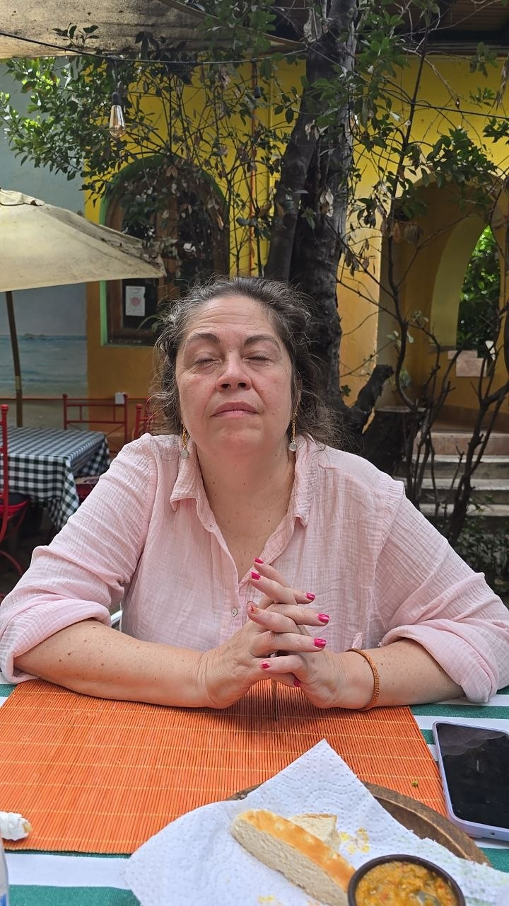

Estar cerca sin desaparecer
Explorar la intimidad, los límites y el lugar que cada persona necesita para sentirse libre dentro de un vínculo.
Cómo aprender a amar en tiempos difíciles.
Hay épocas en que pareciera que todo cambia demasiado rápido: los vínculos, las certezas, las conversaciones y hasta la manera en que nos acompañamos. Este curso es una invitación a bajar un poco la velocidad y mirar con más atención cómo estamos queriendo, cuidando y dejándonos querer.
Vamos a conversar sobre las relaciones que nos sostienen, las que nos confunden y las que nos desafían. No para encontrar fórmulas perfectas, sino para abrir preguntas más honestas: qué necesitamos, qué repetimos, qué nos cuesta decir y cómo podemos estar más presentes con los demás sin olvidarnos de nosotros.
Amar no significa tener todas las respuestas. A veces significa aprender a hacer mejores preguntas.

El curso propone un espacio amable para pensar las relaciones sin recetas rápidas ni juicios. Cada encuentro parte de situaciones que todos conocemos y las transforma en una conversación más profunda.
Explorar la intimidad, los límites y el lugar que cada persona necesita para sentirse libre dentro de un vínculo.
Mirar los silencios, los malentendidos y esas conversaciones que postergamos, aunque siguen pidiendo un lugar.
Preguntarnos cómo se construye el cuidado en la vida real: con atención, presencia, tiempo y una dosis de ternura.
Para quien está atravesando un cambio, para quien se siente cansado de repetir la misma historia, para quien quiere entender mejor sus afectos o simplemente quiere conversar sobre el amor sin ponerse solemne.
No hace falta llegar con una respuesta ni con una historia ordenada. Basta con traer curiosidad, ganas de escuchar y disposición para mirar lo humano con un poco más de paciencia.
Sofía acompaña procesos de salud y educación emocional desde una mirada cercana, curiosa y profundamente humana. En este curso propone abrir un espacio de conversación para mirar cómo vivimos nuestros vínculos y qué podemos aprender de ellos.